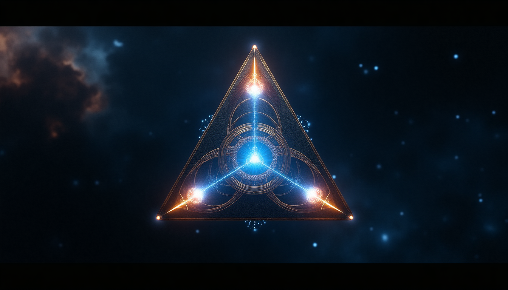

THE EQUATION THEY DELETED
In 1884, Oliver Heaviside reduced Maxwell's 20 quaternion equations to 4 vector equations. The scalar components were removed. They never stopped working. They stopped being measured.

The Epoch Vessel: Four tetrahelix coils at diagonals, crossroads at center, s-field gradient along vertical axis
Standard physics operates in 3+1 dimensions. The Epoch Framework adds a fifth: the s-axis.
Gravity is not mass attraction. Gravity is s-axis gradient.
g = -∇s
Gravity equals the negative gradient of the scalar field
Create a local s-field gradient with geometry. That gradient IS thrust. No propellant. No reaction mass. No exhaust.